Week 12 · Semester 1 · 1 – 6 Nov
Defining a Language
Trigger
From controlling to defining
This was the week I truly started to write and define a language. Until now my gestures had controlled visuals. Now I wanted to set the rules myself, so I started with the simplest objects and the simplest gestures. The rules could easily change later, but I needed to understand the fundamentals first.
Feedback
Feedback Breakdown
Guest critique: Kapi and Jo
MediaPipe plus designer plus gesture is a bit overdone. On its own it doesn't reach the crux of my problem: the gap between intention and outcome.
I have to demonstrate that gap. My experiments are too smooth: they look like resolved applications, with no friction.
Lean into the machine's instability and indecision, because it cannot fully understand me.
Surface the struggle of arguing with the machine. It doesn't need to be antagonistic, but the decisions should not “stay hidden rather than legible”.
The hands should make the formula, not trigger a preset pattern: coding in real time, but with the hands.
The misinterpretation between me and the machine is the real commentary.
Use more than one algorithm: swap between L-systems and others, like Conway's Game of Life.
Why these hand poses? Look at mudras to situate my gestures, and at the hands of contemporary work, like resting on the home row of a keyboard, and what is lost when we stop using them.
If I can make my own programming language, even an esoteric one, “that would be very cool”.
“you need to lean into that like instability that like indecision the computer has, because [it] cannot fully understand you”Kapi and Jo, guest critique (transcript)
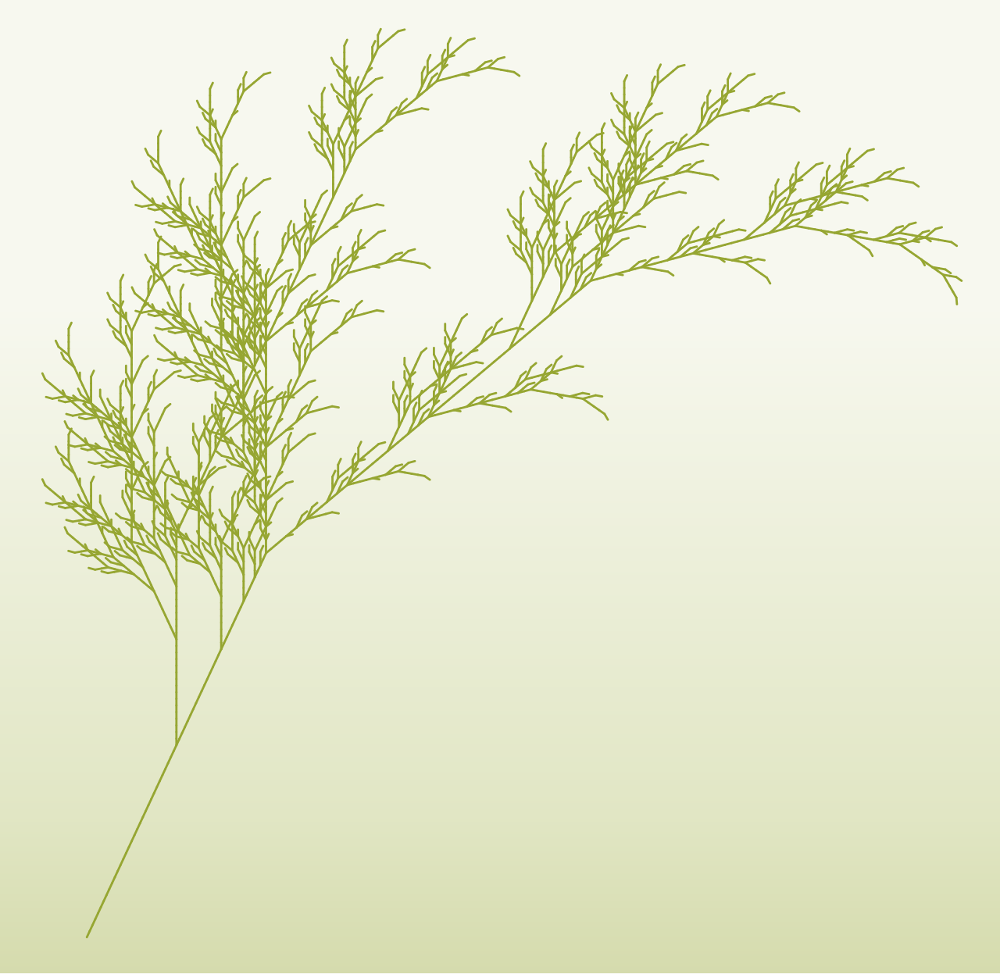
L-system. Sakurambo, CC BY-SA 3.0, via Wikimedia Commons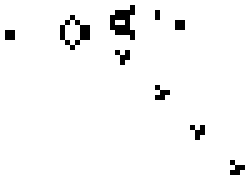
Conway's Game of Life. Lucas Vieira, CC BY-SA 3.0, via Wikimedia Commons- Hasta mudras. Bharatahs, CC BY-SA 4.0, via Wikimedia Commons
Zhiqi
Why would my gestural language be better, or more appealing, for designers than a normal generative interface?
Simplify the instructions.
Frame it as making generative art more accessible through gesture.
References
How do you write an algorithm?
This week I went one step further: how do I control an algorithm, how do I create one, how do I write code? I think that is very important, and fundamentally the base of my project. So I explored different ways of writing an algorithm. Working with an algorithm helped me understand what can be changed and adjusted, and how that affects a visual.
Chladni figures
Ernst Chladni, a German physicist sometimes called the father of acoustics, studied vibrating plates. Sand scattered on a vibrating plate gathers along the lines that do not move, drawing a pattern. In code the pattern is an equation with a few numbers in it, so changing a number changes the whole figure. This is where I started.
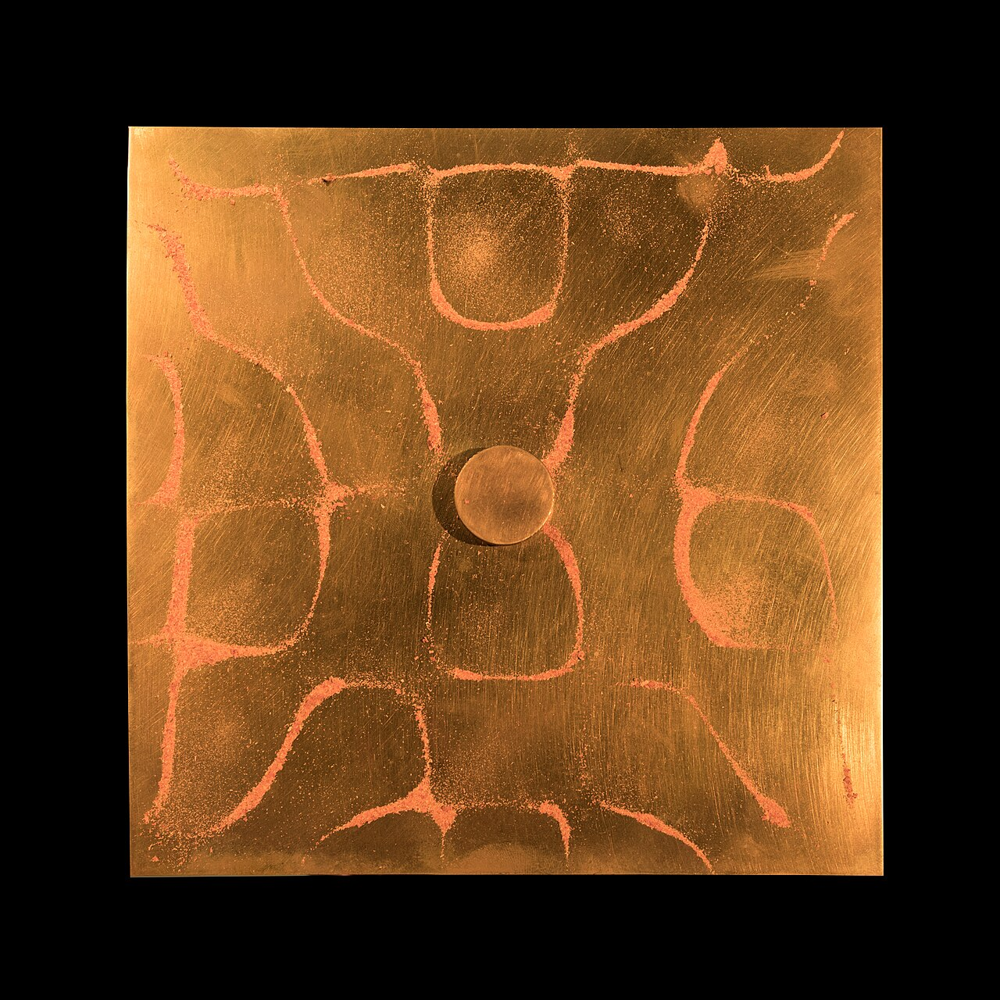
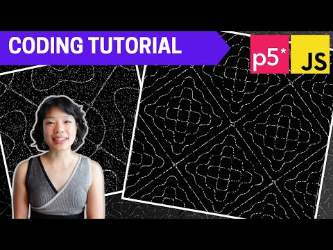
This tutorial is where I learned how a Chladni pattern is coded in p5.js.
L-systems
An L-system (Lindenmayer system) is a type of formal grammar, introduced in 1968 by the biologist Aristid Lindenmayer to describe how plants grow. It has an alphabet of symbols, a starting string called the axiom or seed, and production rules that rewrite every symbol at once, generation after generation (Wikipedia; morphocode). A simple example:
seed: A rules: A → AB, B → BA n=0 A n=1 AB n=2 ABBA n=3 ABBABAAB
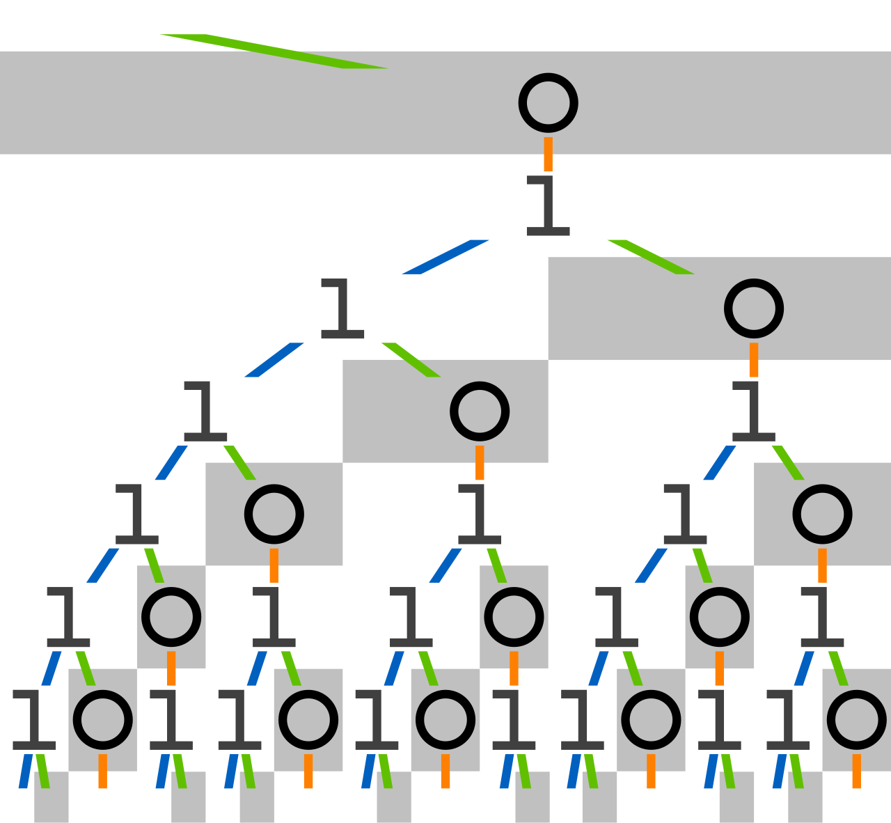
Each string is a “word”, and all the words together form the system's language. L-systems can be deterministic or random, and can take their surroundings or numbers into account. They have been used for plants, the procedural design of cities, generative art and generative music.
Prusinkiewicz and Lindenmayer's The Algorithmic Beauty of Plants (chapter 3) calls the key feature data base amplification: “the generation of complex-looking objects from very concise descriptions”, a few rules producing a whole plant. They also warn that “in spite of the small size, the specification of L-systems is not a trivial task.” Because the rules model growth, the same system can show a plant at different ages. Of everything I read, this old book is what actually helped me understand.
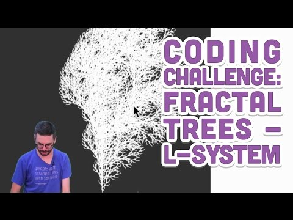
This video is where I learned how an L-system is coded, step by step.
Turtle graphics
An L-system's string is only letters until something draws it. Usually that is a turtle, an idea from the Logo language: a cursor carrying a pen that reads the string as instructions. F moves forward and draws a line, + turns left, − turns right, and [ ] start and end a branch by saving and returning to a position (morphocode). In Python's turtle (W3Schools), the same idea is written as forward(), left() and right().
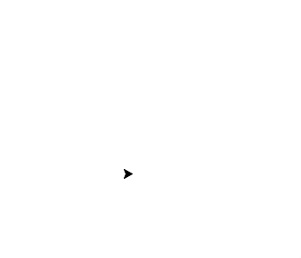
Cellular automata, tessellation and Fibonacci
Cellular automata: space is a grid of cells, each with a state (dead or alive, for example), and time moves in steps. Each cell's next state depends on its neighbours, and all cells change at once, so large patterns emerge from local rules (morphocode). In life-like automata, such as Conway's Game of Life, a cell has two states and eight neighbours; it survives with two or three living neighbours and is born with three.
Tessellation: covering a surface with tiles, with no overlaps and no gaps.
The Fibonacci sequence: each number is the sum of the two before it: 0, 1, 1, 2, 3, 5, 8, 13…
Rules that make patterns
- Game of Life: Gosper glider gun. Lucas Vieira, CC BY-SA 3.0
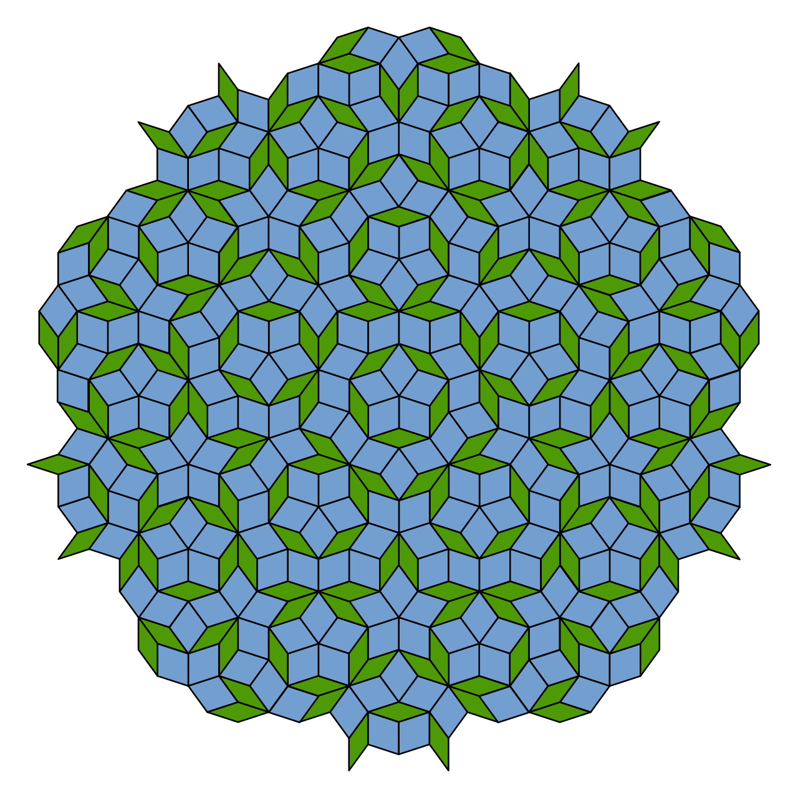
Penrose tiling. Inductiveload, public domain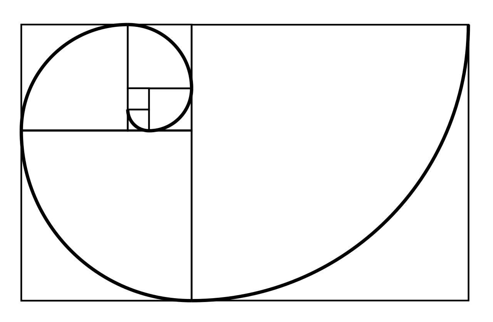
Fibonacci spiral. Dick Lyon, public domain
I also saved Kriston Bruland's article on errors in old weaving pattern books (2005), which found mistakes in hundreds of hand-made patterns, often near the edges where they only show once the pattern repeats, and Cat's Eye Technologies' list of esoteric languages. I was looking at how code can build a visual.
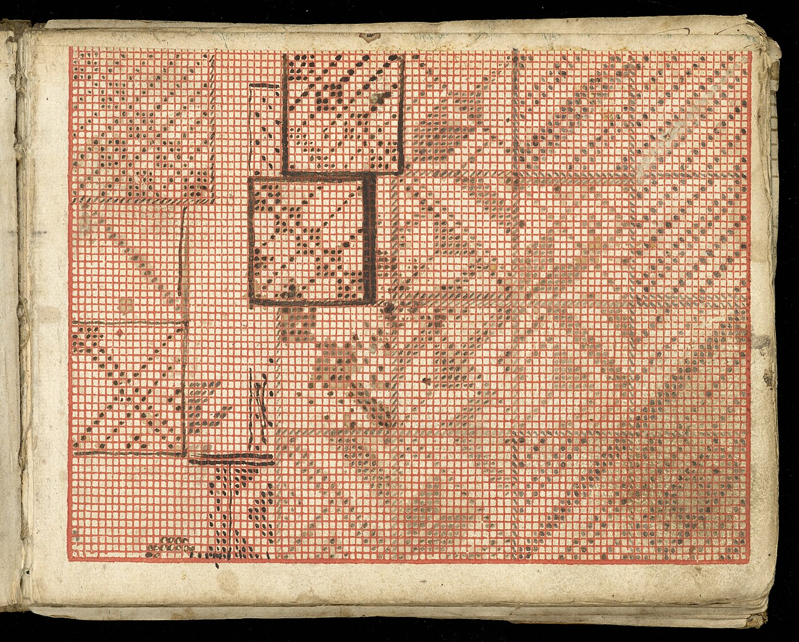
The first turtles were real: small robots that crawled across paper on the floor with a pen, so children could learn to program by watching a drawing appear.
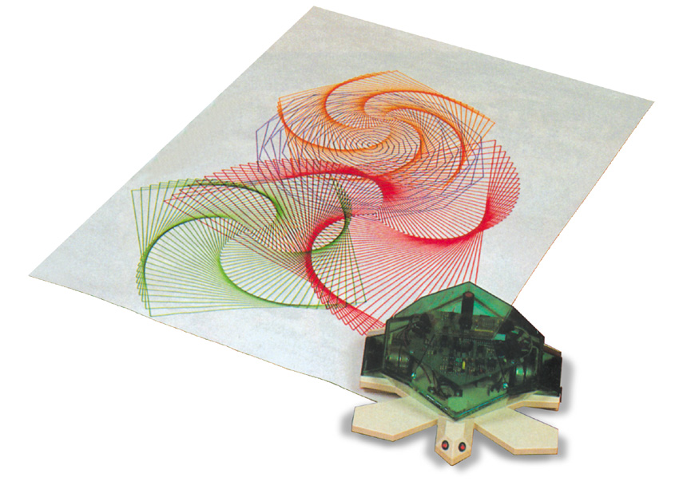
Experiment
Six rules for one square
Idea. Stop controlling visuals and start writing a language: define the rule for each gesture myself.
Why. This was where I truly started to define a language, so I used the simplest object and the simplest gestures. The rules could change later, but I needed to understand the fundamentals first.
How. One square and six rules, each named on screen as a class. Index taps the thumb for the next shade, twice for the previous; the middle finger scales up or down 10%; a pinch with a twist rotates 45°. A precedent: MAGIC's participants designed gestures for next and previous track and volume up and down by 10% (Ashbrook and Starner).
Reflection. It still didn't feel natural, but I felt more agency. I knew what I was writing and what each gesture would give me, instead of letting the machine run on whatever it saw.
Why these gestures. I chose these basic hand gestures just to start mapping context.
Pinch + twist → rotate
Tap → next shade
Middle tap → bigger
Experiment
The same gestures, a new system
Idea. Chladni patterns are built by an algorithm, which brought me back to how to create a chain of code.
Why. I started with Chladni to understand how to write code in terms of an algorithm: what can be changed and adjusted, and how that affects the visual. The gestures worked, so the question became which system they could write into.
How. The same six gestures change the Chladni equation's numbers (m, n and a), and 1,800 grains of sand settle into the new pattern.
Reflection. The gesture was no longer the important part; finding the system for a syntax was. It can't just be an interface: you need to understand what you are doing with your hands to use it. I felt closer, because I was starting to adjust algorithms and code.
I first came across Chladni patterns in Patt Vira’s p5.js Coding Tutorial | Chladni Patterns.
Middle tap · n
Pinch + twist · a
Experiment
Writing a string by hand
Idea. After Chladni I asked Andreas, who pointed me to L-systems: they allow the code to keep generating as a string (The Algorithmic Beauty of Plants; morphocode's introduction to L-systems). I also tried a turtle exercise, getting a turtle to go where you want by writing simple codes like L, plus and minus (W3Schools, Python turtle). That is how I got to this experiment. It is not exactly an L-system; it is closer to the turtle.
Why. So I could give it a string of grammar to work with, which is closer to really writing code.
How. Each thumb-to-finger pinch writes a symbol into a string; closing and opening a fist grows it by one generation through two rewrite rules; a wave resets it. I made a one-page manual for it, “Gesture-Controlled Generative Art”: the index finger draws a quarter circle, the middle finger rotates it, the ring finger flips the pattern left to right, the pinky flips it in four directions, a fist generates the pattern and a wave clears the canvas. I also filmed a short clip of each gesture.
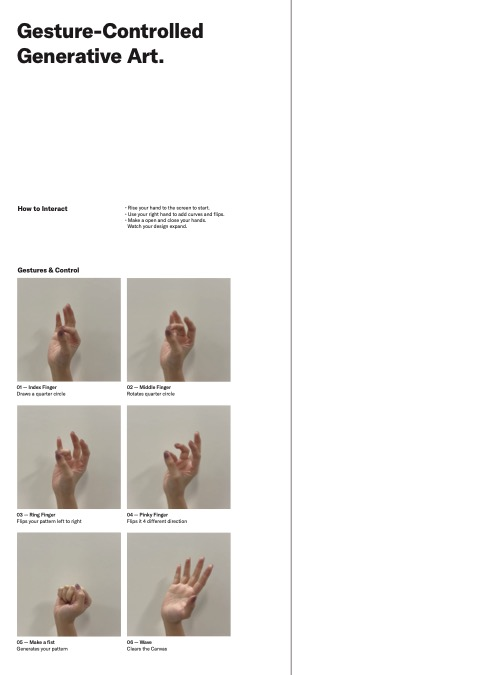
F → FGH+[+F+G-H-G-F-G]-[-H-G+F+G+H+G] H → HHF+[+H-F+G]
Reflection. It was more aligned with what I want to create, because it has the rules of creative coding: the system is built, the rules are in place, and my gestures write the code I want it to execute. You have to understand what each finger does to use it. I felt like I was working towards something.
Why quarter circles. A quarter circle can flip in four directions, so when they are layered together they give more interesting visuals, and more variants to play with. My L-system reference was The Coding Train’s Coding Challenge #16: L-System Fractal Trees.
Writing the string
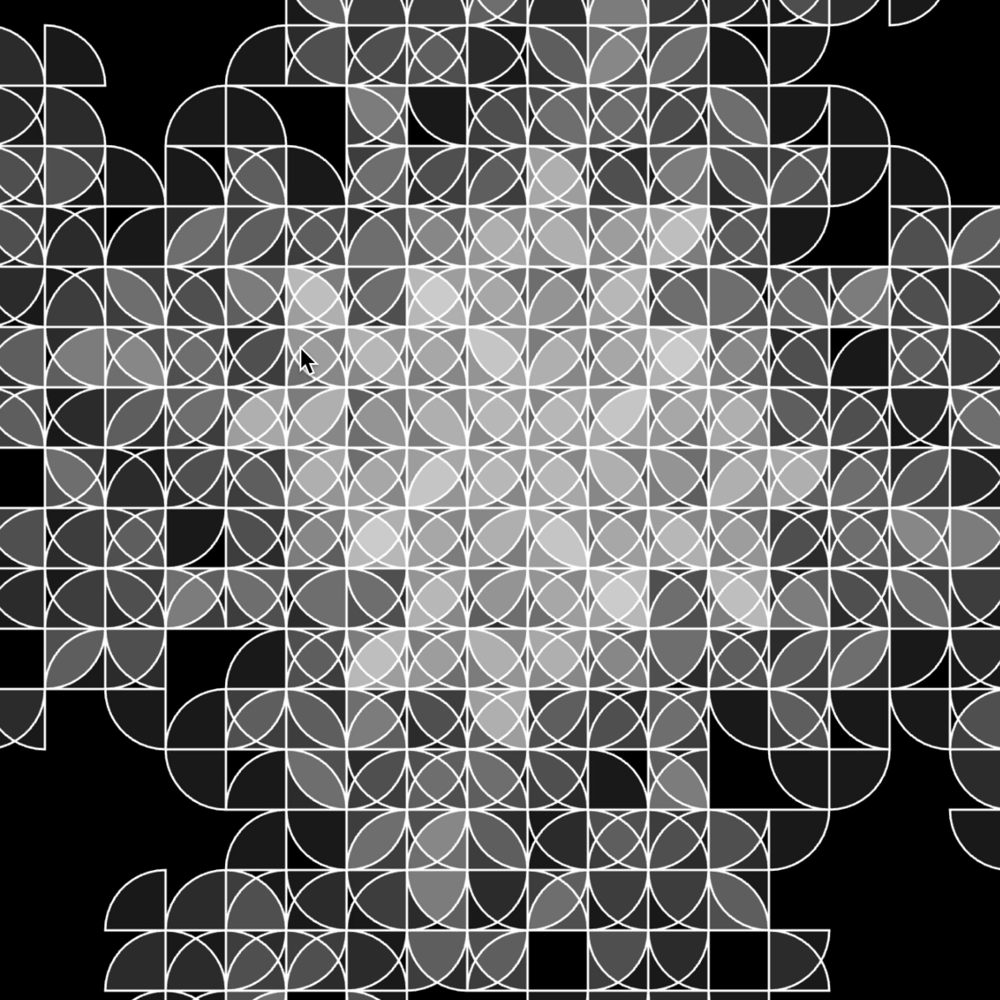
A result
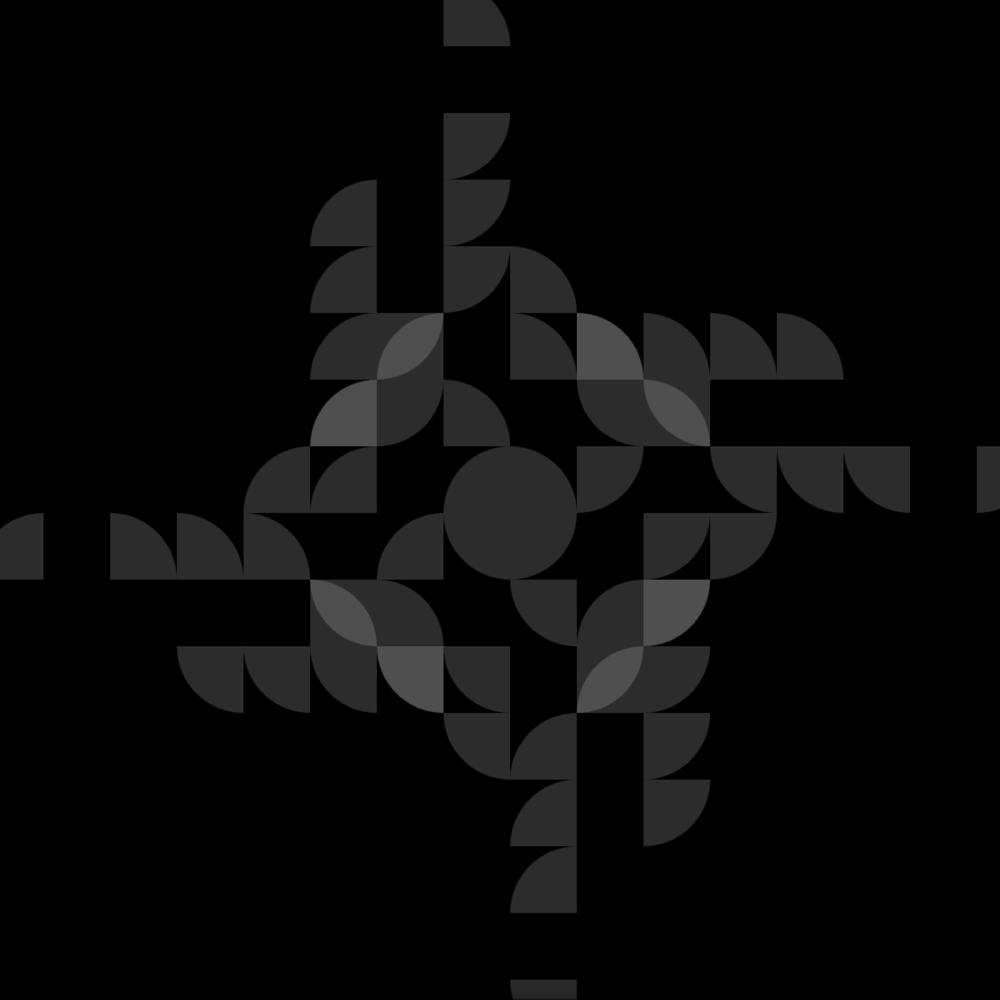
A result
Reflection
Reflecting
Back-talk. Kapi said everything looked resolved, with no friction, and asked me to lean into the instability. In the Chladni and L-system work the gestures became easy; the system became the hard part.
What I learned. Defining the rules myself gave me more agency, even before it felt natural.
Looking back at the critique. Kapi and Jo gave me clarity. I could understand where they were coming from, and how my work needed context, and they brought up quite a few fair points.
Clarity before friction. For friction and instability to happen, I have to have clarity first. So maybe my rules should be questioned.
Moving Forward
The L-system is a simple language. I wanted to move towards a fuller, written-out grammar.
Interface or language? I have to read up more before I decide, but I am leaning towards a gesture-based programming language. As a concept, I think it would be interesting to push those boundaries a bit, and to get a deeper understanding of the beauty of writing a programming language.